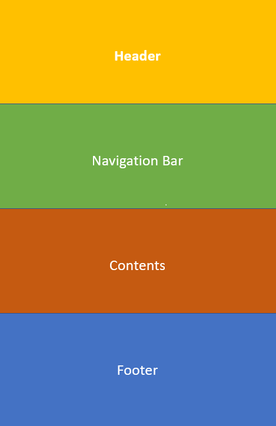

Personally, I feel that I have done a decent job on this website, I am pleased with the overall aesthetics and theme of the website (background and text colours used).
Along with this, I believe that I have created a nice and simplistic website that is easy to follow and navigate with the tools at my disposal. However, my only complaint would
also be on the simple nature of this website, which may be potentially lacking in detail in some areas or may seem to be "plain".
Therefore, overall I believe that I have fulfilled most of the technical and quality based criteria used to assess this assignment. However, some areas in the comments and other
sections of the website may be lacking in details.
In terms of structure, this website is divided into four main pages that are based upon the contents of each page which are detailed below:
| Filename | Title | Purpose |
|---|---|---|
| index.html | Home | This is the landing page of the website and provides a brief introduction to the parts of the website |
| past.html | Past | This page details my previous experiences with computing and IT in general |
| future.html | Future | This page details any future career and personal aspirations that I have |
| comments.html | Comments | This page explains the design choices and processes that went into creating this website |
Each page also has its own vertical structure which is arranged in a series of "blocks", providing a baseline for the way that the page is organized. This is represented in four main components:

Header: This is located at the top of the page, and is generally a section of the page dedicated to the title of the page (Refer to the table for page titles).
Navigation Bar: This is located just below the header and is essentially a set of links that when clicked on will redirect the user to a separate page depending
on the link clicked on by the user.
Contents: This is generally the bulk of the page and contains all the paragraphs along with the majority of the content of the page. In this website, the contents
section is further divided into several smaller sections according to the context of each section. These sections are organized as individual boxes through the use
of divs and a paragraph class which is defined in the CSS, this class uses a combination of margins, along with borders and padding to separate each section.
Footer: This operates in a similar way to the header of the page. However, as the name suggests it is located at the bottom of the page and is intended to provide
some information about the context of this website and some contact details for me.
Besides this, the internal contents of each paragraph are further separated through the use of HTML heading and paragraph tags, which are then styled using
CSS classes to better differentiate the heading from the rest of the paragraph. In some instances, especially those of longer paragraphs the pre tag is used
instead of the standard paragraph tag to manually control the "cutoff" point for each line in the paragraph. Otherwise, with the standard paragraph tag
each line would extend to the entire horizontal width of the page.
On the topic of selectors and ids, classes are by far the most utilized selectors within this website, with several classes that are dedicated to styling
the text throughout the paragraphs. There are also classes that are dedicated to manipulating the visual aspects of the website (Elements such as the header,
paragraph blocks and the navigation bar). These classes often manipulate the padding, color and size of the element along with additional options (Margins and
borders) to achieve a visually appealing design. Other than this, ":hover" and ":nth-child" selectors have been used on buttons and table rows respectively for
the same reason as above, to make the website more appealing and less plain.
The aim of this website is to recreate a "Dark-type" theme which can be commonly found within many applications and websites today most notably for me being
the "Discord" application and its dark theme. Therefore, the majority of this website including the background and segments of the website (Div containers
for paragraphs) follow a grey gradient which varies between a darker and lighter shade to add a touch of "spice" to what would otherwise be a very bland
website (only 1 colour).
Also, most of the text in the paragraphs used are also a lighter shade of grey (Besides the paragraph headings) instead of purely white which are used
in some "Dark" themes. This is done to reduce the contrast between the background and the text, as sometimes a high contrast may come off with a "glaring"
feeling for some people.
Besides the overall colour scheme of the website, the interface of the website aims at providing a clean and simple look/feel. Therefore, the sections within the
website are all fairly spaced out from each other, often times with individual sections being encapsulated in their own segments. This can be seen in the
paragraphs throughout the website, with each paragraph being placed within a separated "box" that has its own border and is clearly separated from the other
paragraphs.
In terms of accessibility, this website does not have any advanced features such as speech control or alternative keyboards. However, there are several features
that improve visual accessibility. Every image used in this website has an alternate name which acts as a brief description for the contents of the image in the case
that the image cannot be displayed or viewed. Also, the overall font size used throughout the website is fairly large in my opinion (20px for standard text), this in
combination with the frequent use of empty lines between paragraphs and the 1.5x vertical spacing between lines should make the text more readable or easier to follow
for those with visual impairments.
Other than this, the overall flow or structure of the document is linear and top to bottom in nature making the flow of the page easier to follow. There is also not much
clutter on the sides of the pages or even in the website in general, this removes any distracting elements from the view of the user, providing those with focusing difficulties
with a better experience.
Besides visual features, this website only has 4 links that are clearly displayed at the top of the page. Therefore, even without a mouse, users should be able to easily
access the different pages of this website using the "TAB" key on the keyboard to cycle between the links. Also, while this is not an accessibility function, this website does
not possess any form of audio or auditory media. Therefore, users with hearing difficulties or impairments do not have their experience affected while navigating this website